Each of the following ten reactions takes place with a single reagent. Classify each one as either an oxidation, a reduction, or a hydrolysis reaction. Simply tick the appropriate box in the answer booklet.
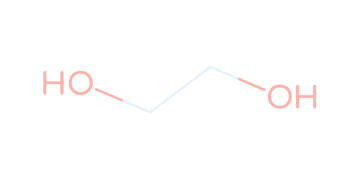
